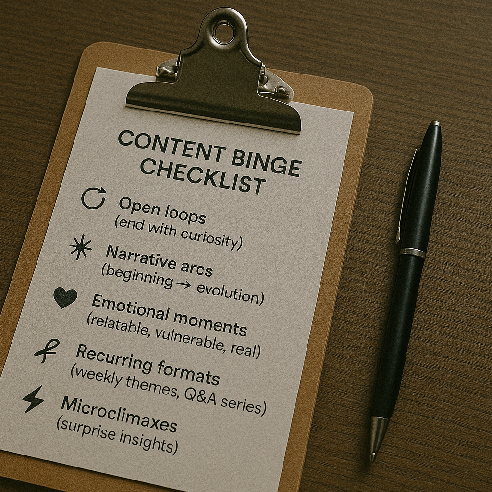
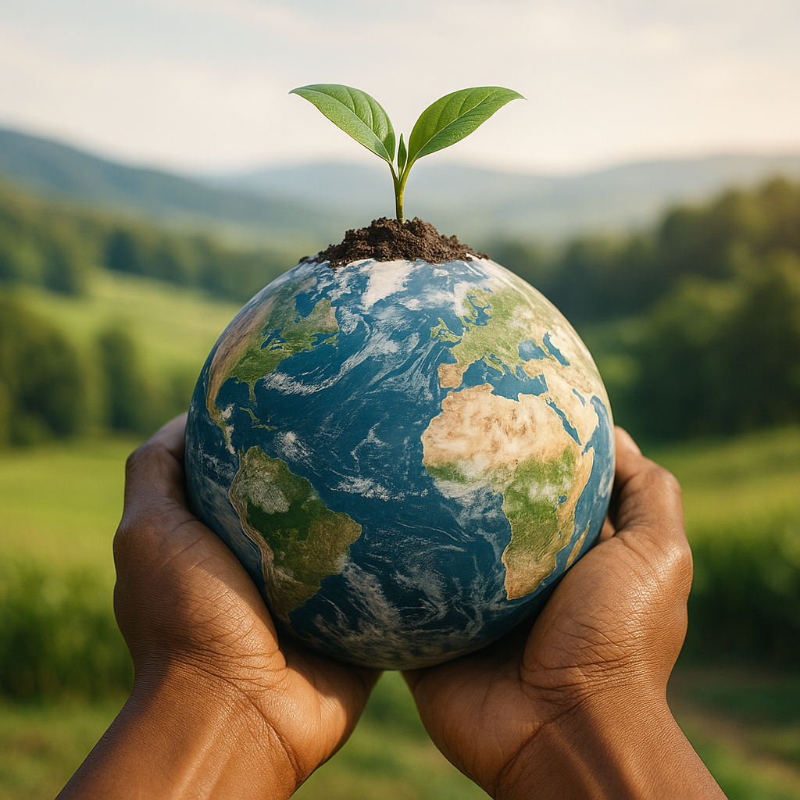
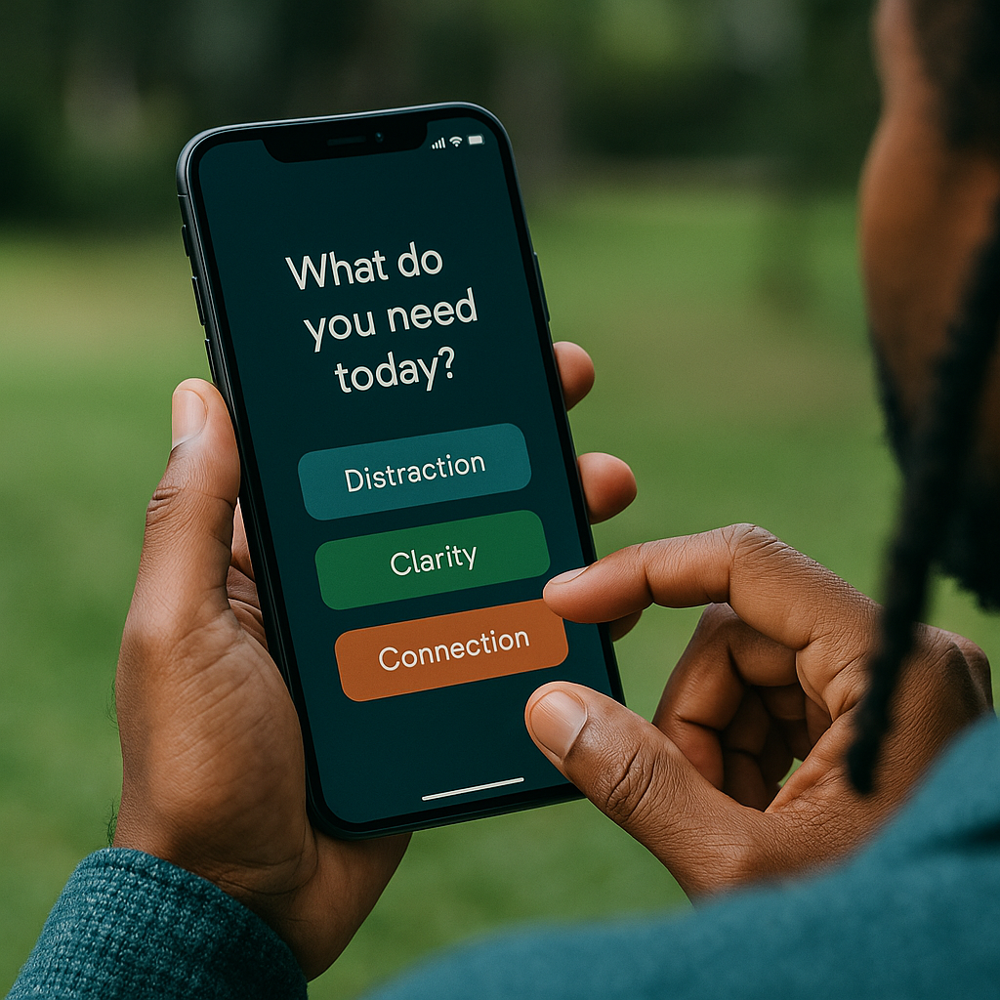
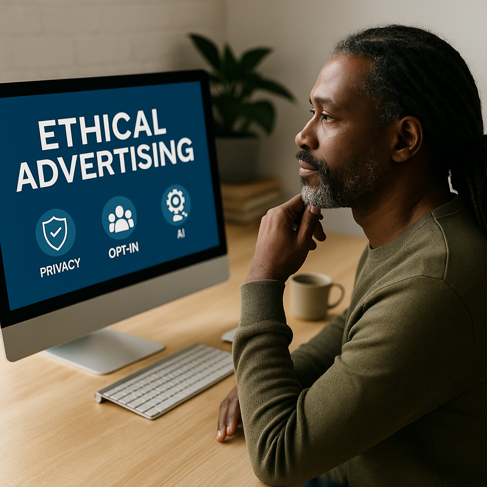

🎯 SERP Real Estate Toolkit
Win more “screen space” on Google: Featured Snippets, PAA, Local Pack, Video/Image carousels, Sitelinks, and AI Overviews—what they are and how to earn them ethically.
Actionable checklists, playbooks, and worksheets to help you grow with clarity. Unlock any toolkit with your name and email—instant access, no fluff.
Win more “screen space” on Google: Featured Snippets, PAA, Local Pack, Video/Image carousels, Sitelinks, and AI Overviews—what they are and how to earn them ethically.

A 2×2 matrix that helps you evaluate content by both Reach (traffic, shares, impressions) and Depth (saves, replies, conversions). Spot “Quiet Gold,” double-down on “Compounding Assets,” and retire shallow fades. A simple framework to make smarter editorial and SEO bets.

From solopreneurs to scale-ups, this toolkit shows how to connect email, e-commerce, support, and analytics into a seamless flow. With tool pairings, workflows, and a 3-month roadmap, you’ll turn platform chaos into customer clarity.

A practical checklist to turn casual scrollers into loyal binge-watchers of your brand. Learn how to hook, loop, repurpose, and reward—so every post builds momentum for the next.

A practical framework to measure what your company gives back, not just what it takes. Score across 5 dimensions—regenerative impact, community well-being, equitable governance, knowledge-building, and multi-metric success—and identify clear steps toward a fully Net Positive business.

A curated mini-guide to help you block distractions, reclaim focus, and build mindful habits. From Freedom and Brain.fm to Daylio and Obsidian, these tools help you design a healthier digital ecosystem.

Most “sustainability” dashboards stop at CO₂. This guide helps you avoid carbon tunnel vision with a practical, people-and-planet framework that tracks biodiversity, soil vitality, water integrity, human well-being, cultural resilience, and governance equity—complete with a sample KPI dashboard and implementation steps. Measure what matters. All of it.

Five global brands prove that ethical paid campaigns build trust and ROI. From 🛒 Aldi’s value-first ads to 🌱 Allbirds’ carbon labels, discover how purpose-led media spend turns customers into loyal advocates.